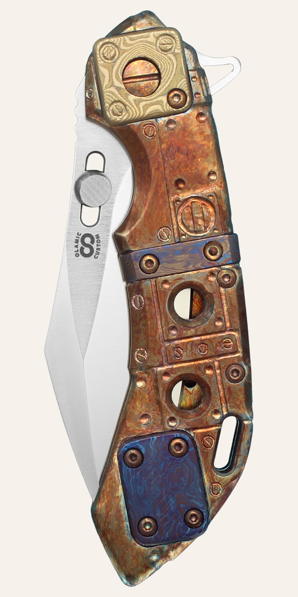
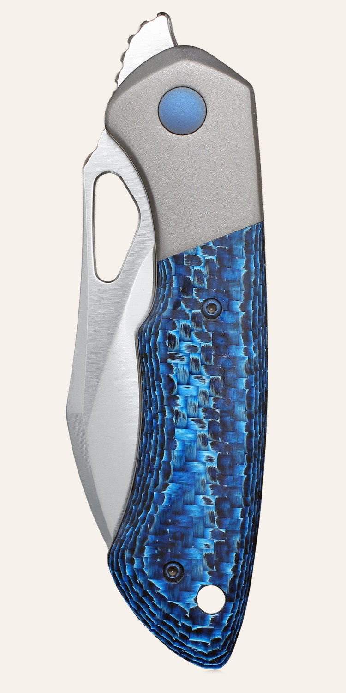
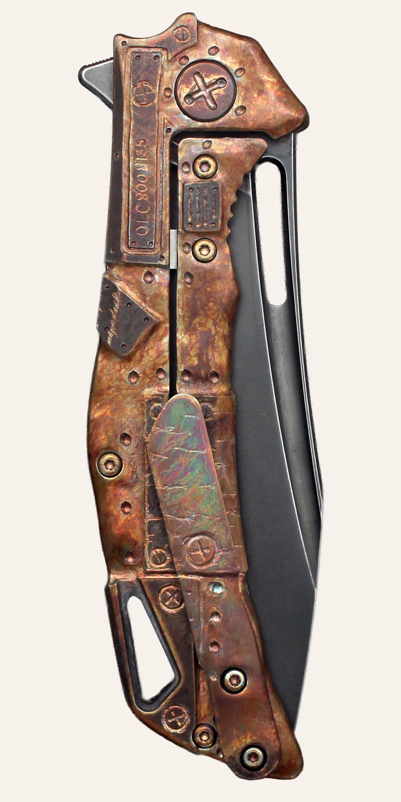
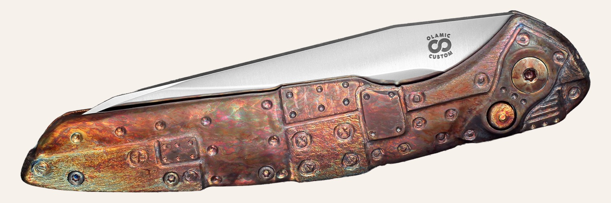
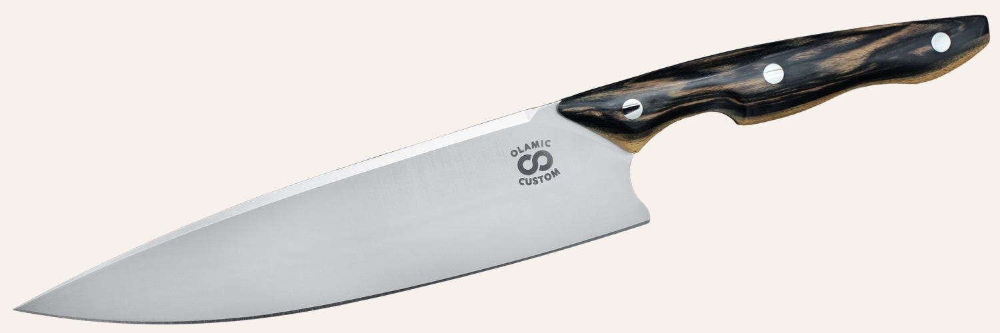
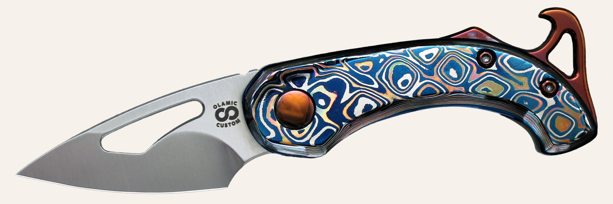
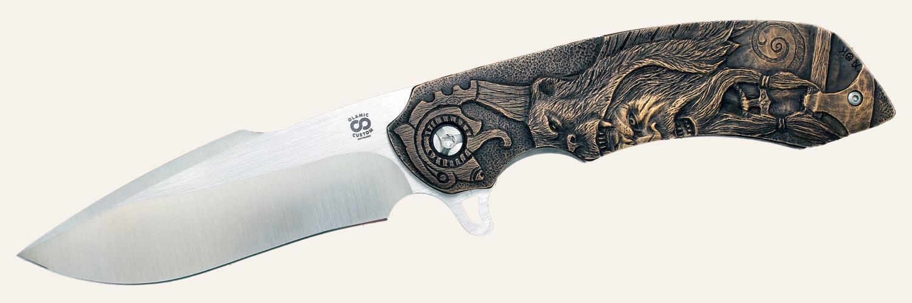
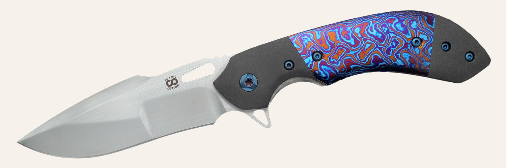

Visalia, California · since 2010
Never the same.
Olamic Cutlery is the Solomonik family shop. Every knife is serialized. The finish changes from one serial to the next, on purpose.

On the bench
Eight ways the line changes size.
 BuskerFront flipper · frame lock
BuskerFront flipper · frame lock
WhippersnapperFront flipper · frame lock- Wayfarer 247Frame lock · rear flipper

SwishFrame lock · rear flipper RainmakerFrame lock · rear flipper
RainmakerFrame lock · rear flipper SoloistFrame lock · flipper or thumbstud
SoloistFrame lock · flipper or thumbstud
AuraButton lock · out-the-side automatic
SilhouetteChef's knife · CPM MagnaCut
Fourteen models
From a non-locking Appetizer to a 7.5 inch chef's knife.
Frame locks are fitted in Visalia after the precise parts are machined. The early customs, the Wayfarers and the Rainmaker and the Gambit, are still ground without a CNC.

Appetizer
Andrey Kolesnikov's small folder, with a modular spine and a detent that holds it open and closed.
Busker
The small one. A 2.375 inch M390 blade, opened a lot of ways, and not a shrunk 247.
Whippersnapper
Kolesnikov's next small folder after the Busker. A four-finger grip, a choil, and CPM 20CV.

Whippersnapper Bolsterlock
Same Whippersnapper, with an integral front bolster and scales. Micarta, carbon fiber, Damasteel.

Gambit
A small collaboration with Serge Panchenko. Fifty-eight were made, each one different, and none of it on a CNC.

Wayfarer Compact
The smaller handmade Wayfarer. A 3.375 inch edge, no CNC, and the knife the 247 grew out of.
Wayfarer 247
The everyday knife, and the one the shop finishes a million ways. No two leave the bench alike.
Aura
The first Olamic automatic. A 247-sized titanium knife that opens itself.
Swish
Named for the upswept slicer. Elmax, a long fuller, and a quiet bearing flipper.
Rainmaker
A slim handle hiding a 4 inch blade. The frame-lock version of Alexander Birykov's custom.

Rainmaker Classic
The second folder out of Visalia. May 2015, about a hundred in the first run, no CNC.

Wayfarer Classic
The first Visalia folder. Blade Show 2013, twelve knives on the table, still built without a CNC.
Soloist
The large tactical folder. Thick M390, two shapes, a grip that locks in forward or reverse.
Silhouette
The first proper Olamic chef's knife. A 7.5 inch satin MagnaCut blade and a carbon-fiber handle.
What an amazing knife. I was blown away the first time I fired it open.
Serialized
The name means something that lasts. The mark is an infinity. The warranty is lifetime, and it follows the knife past the first owner.
Finished by hand
Hole patterns, carving, anodizing, inlays. Most of that cannot be machined, which is why two 247s with the same blade shape still do not match.
Spa service
Send it back. The shop replaces wear parts, sets the detent and the lock, cleans it, and oils it. Sharpening is included unless you say otherwise.
Andrey Kolesnikov
Hand carved, one knife in a series.
Since December 2016 the carving has been Andrey's. Each series has a theme and a finite count. When the count is done, the series closes.